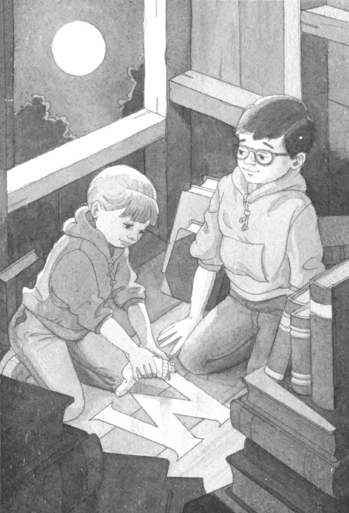
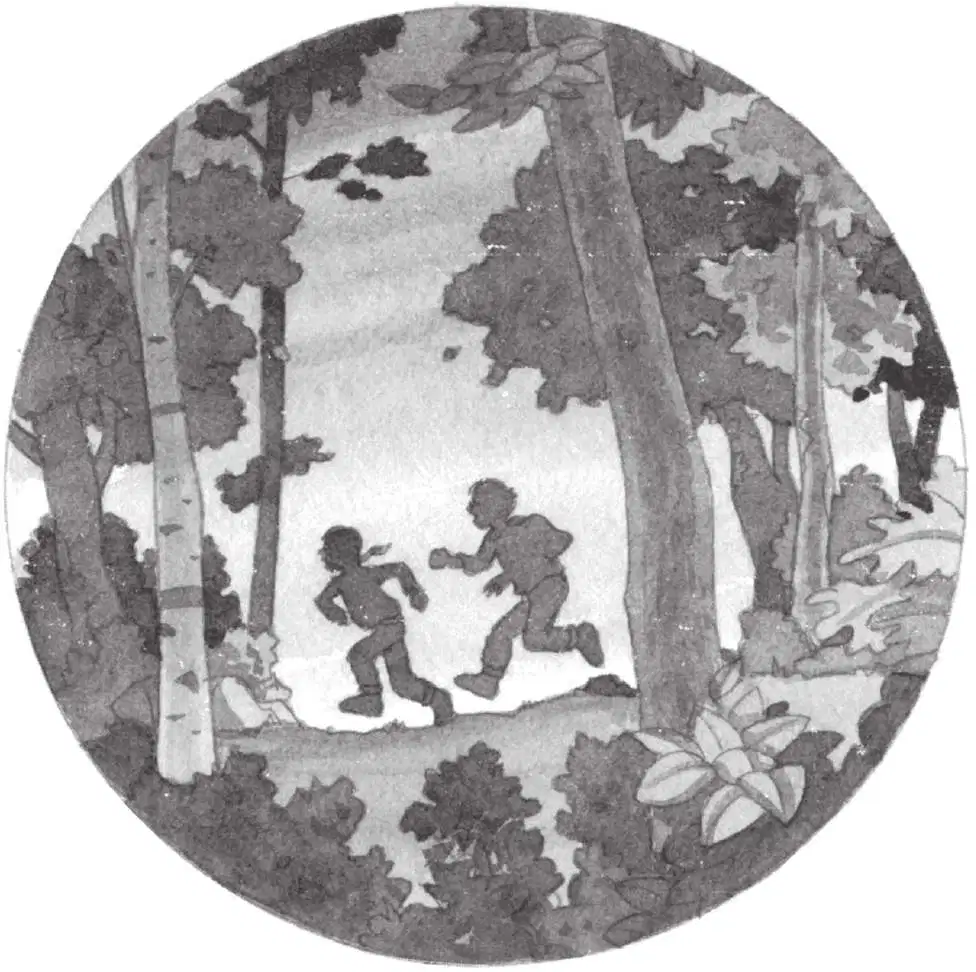

杰克睁开眼睛。
他松开攥紧的拳头，呆呆地望着手里的月光石。它晶莹、光滑，似乎还散发着微微亮光。
“我们回家了。”安妮说。
“吱吱。”
安妮和小老鼠探头望着窗外。
杰克也过去一起张望。
远处太阳正在落山。
在蛙溪，时间还停留在他们离开时的那一刻。
他们听见邻居家的狗亨利在汪汪叫，还听见蟋蟀在欢快地唱歌。
远远地，他们看见爸爸从家里走了出来，站在门廊上。
“杰——克！安——妮！”爸爸喊道。
到吃晚饭的时间了。
“来啦——”安妮大声回答。
杰克跪坐着，又看了看手里的月光石。
“我想，我们已经得到了四样东西中的一样。”他说。
“我们明天去找另外三样。”安妮说。
杰克点了点头。他们还有许多工作要做呢。
他把月光石放进了口袋，然后拎起背包。
“准备好了吗？”他说。
“稍等。”安妮说。她脱下一只运动鞋，扯掉袜子，然后又把鞋子穿上。
“你在干什么？”杰克问。
“我要铺一张床。”安妮回答。
“一张什么？”杰克问。
“床！你瞧，是给花生米睡觉用的。”安妮把小老鼠捧起来，放进了她的袜子。
“晚安，花生米。”她轻声说了一句。
“吱吱。”
“哦，拜托。”杰克说。
安妮把小老鼠举到杰克面前。
“亲亲它，祝它晚安吧，杰克。”她说。
“别说傻话了。”杰克说道，“我们走吧。”

“谢谢你帮助了我们。”安妮对小老鼠说。
她把小老鼠轻轻地放在那个闪闪发亮的字母M上。然后，她又把仙女摩根的那张字条从口袋里掏出来，放在小老鼠的旁边。
“明天见啦。”安妮说完，就顺着梯子往下爬去。
杰克看了看小老鼠，小老鼠也看了看他。
一时间，小老鼠那双乌溜溜的眼睛看起来深邃而充满智慧。
“快点儿啊，杰克！”安妮喊道。
杰克亲了亲小老鼠的脑袋。
“祝你晚安，花生米。”他轻声说道。
杰克也顺着绳梯爬了下来。
这时，天色越来越暗了。
当杰克的双脚终于踏在地面上时，天色差不多完全黑透了。
“你在哪儿？”杰克问道。
“这儿。”安妮说着碰了一下杰克的手，杰克一把握住。
“当心哦。”杰克说。
“你也当心。”安妮说。
两人相伴着，穿过凉爽、黑暗的树林，往家走去。
他们默不作声，走得很快——就像两名归来的影子武士。
